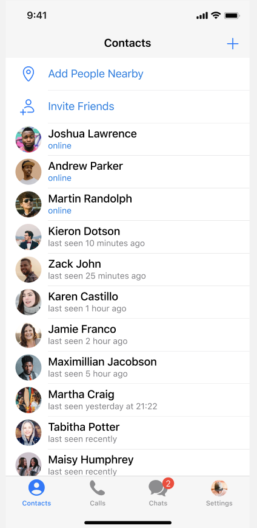
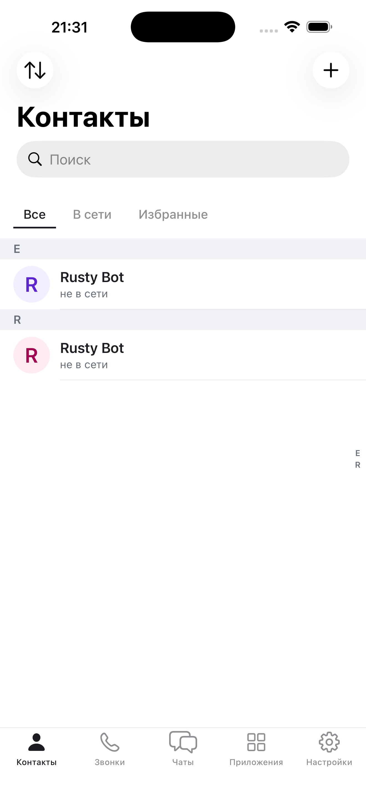
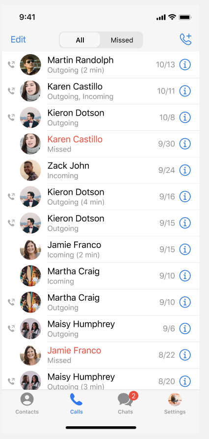
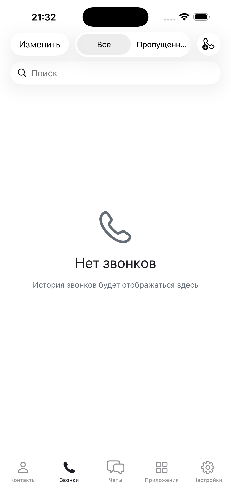
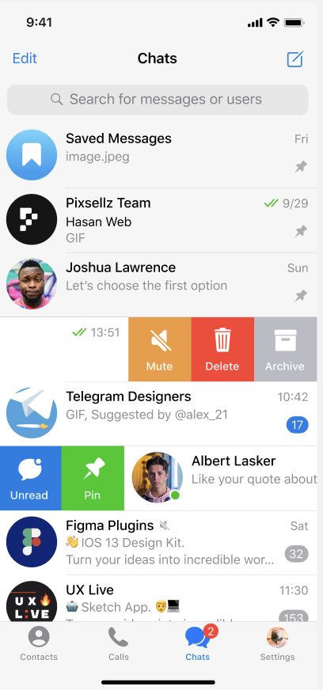
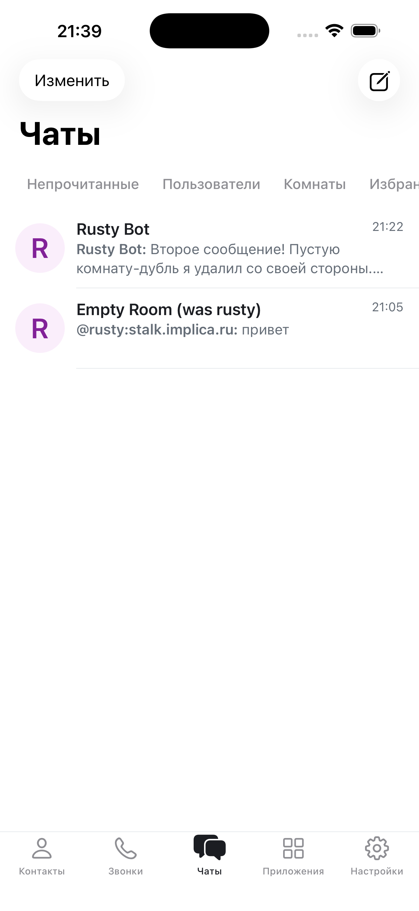
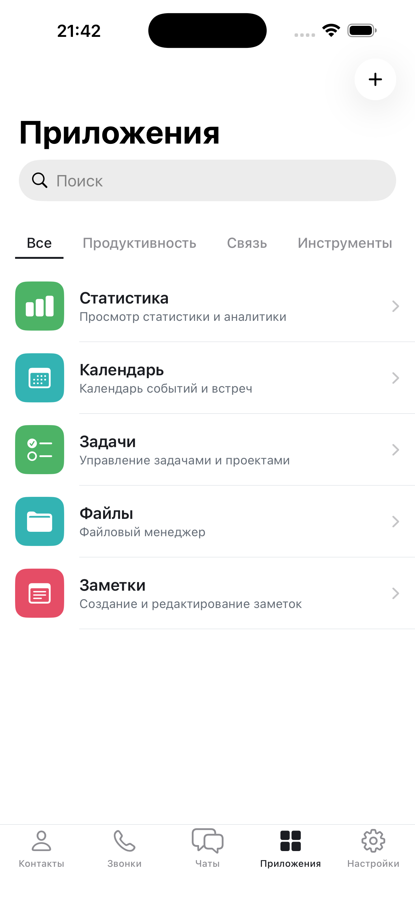
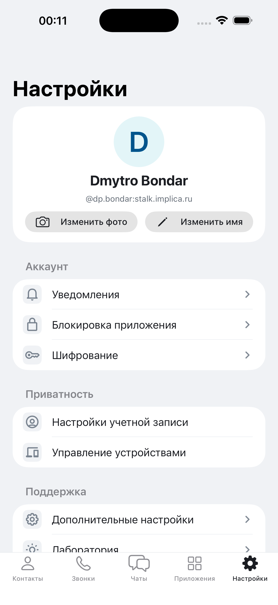
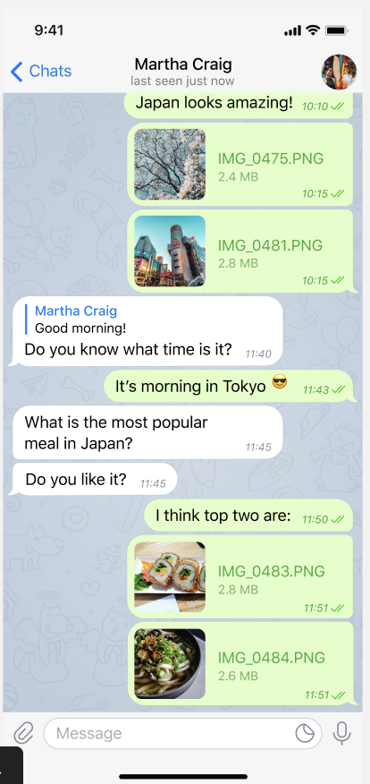
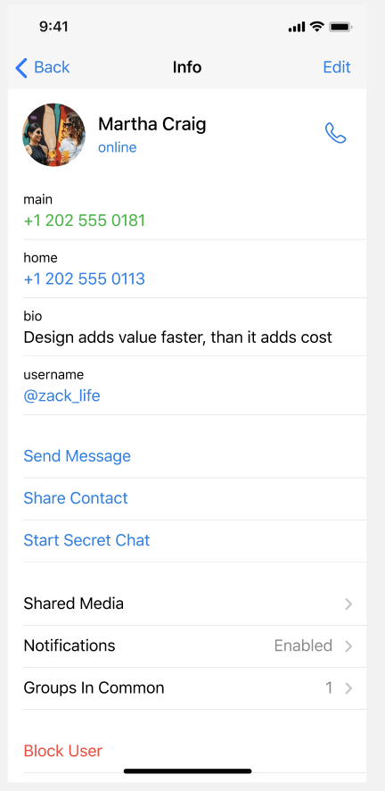

Сравнение с реальным интерфейсом Telegram (классический дизайн, до Liquid Glass)
Дата: 09.02.2026 |
ref-tg-*.png = скриншоты Telegram iOS (classic) |
report-*.png = sTalk (sim2, dp.bondar@stalk.implica.ru)
4 вкладки:
| Contacts | person.fill (active: filled blue) |
| Calls | phone.fill |
| Chats | message.fill + красный badge |
| Settings | gearshape |
Непрозрачный белый фон, тонкий separator сверху. Активный = filled + blue, неактивный = outline + gray.
5 вкладок:
| Контакты | person (Lottie) |
| Звонки | phone (Lottie) |
| Чаты | bubble.left.and.bubble.right (Lottie) |
| Приложения | square.grid.2x2 (SF Symbol) |
| Настройки | gearshape (Lottie) |
| Элемент | Telegram | sTalk | Статус |
|---|---|---|---|
| Количество вкладок | 4 | 5 (+Приложения) | + уникальная вкладка |
| Иконка Контакты | person.fill | person (Lottie) | ⚠ Lottie, не SF |
| Иконка Чаты | message.fill (один пузырь) | bubble.left.and.bubble.right (два) | ⚠ Другая иконка |
| Название 5-й | Settings | Настройки | ✓ Совпадает! |
| Иконка 5-й | gearshape | gearshape | ✓ Совпадает! |
| Active = filled | Da (person.fill, phone.fill...) | Нет (outline всегда) | ⚠ |
| Цвет активного | Синий #007AFF | Синий | ✓ |
| Badge на Chats | Красный кружок с числом | Красный кружок | ✓ |
| Тип иконок | SF Symbols | Lottie (4) + SF (1) | ⚠ |
Старый отчёт говорил "Настройки" неправильно, должно быть "Профиль" — но в реальном Telegram 5-я вкладка тоже "Settings" с иконкой gearshape! Наша реализация совпадает с Telegram.
Telegram использует 4 вкладки, у нас 5 — дополнительная "Приложения" — это фича sTalk, не баг.


| Элемент | Telegram | sTalk | Статус |
|---|---|---|---|
| Заголовок | "Contacts" (centered, standard) | "Контакты" (large title, left) | ⚠ Другой стиль |
| Фильтры | НЕТ — плоский список | Underline: Все, В сети, Избранные | + Бонус sTalk |
| Строка поиска | Нет (скрыта в скролле?) | Есть, видна сразу | + Бонус sTalk |
| Кнопка "+" | Справа в nav bar | Справа в nav bar | ✓ |
| Add People Nearby | Есть (location) | Нет | ⚠ |
| Invite Friends | Есть | Нет | ⚠ |
| Сортировка списка | По online/last seen | По алфавиту (A-Z) | ⚠ Другая логика |
| Онлайн-индикатор | "online" зелёным текстом | "не в сети" серым | ⚠ |
| Last seen | "last seen X ago" | "не в сети" | ⚠ Менее детально |
| Алфавитные секции | Нет (плоский список) | Есть + scrubber справа | + Бонус sTalk |
| Кнопка сортировки | Нет | Есть (слева вверху) | + Бонус sTalk |


| Элемент | Telegram | sTalk | Статус |
|---|---|---|---|
| Заголовок | НЕТ (нет large title!) | НЕТ | ✓ Совпадает! |
| Стиль фильтров | Pill segmented control | Pill segmented control | ✓ Совпадает! |
| Фильтры | All / Missed | Все / Пропущенные | ✓ Совпадает! |
| Кнопка Edit | "Edit" слева | "Изменить" слева | ✓ |
| Кнопка звонка | Телефон+ справа | Телефон + AI-бот | ⚠ Дополнительная |
| Строка поиска | Нет (видимо скрыта) | Есть | + Бонус |
| Ячейка звонка | Аватар + имя + направление + дата + (i) | Пусто (нет данных) | ⚠ Нет данных для сравнения |
| Пропущенные = красный | Да (имя красным) | Не проверено | — |
| Кнопка (i) у звонка | Есть, синяя | Не проверено | — |
Старый отчёт оценивал Звонки на 40% и считал pill-фильтры ошибкой. Но реальный Telegram тоже использует pill segmented control на вкладке Calls! И тоже без large title!
Наша реализация на самом деле очень близка к Telegram. Оценка повышена до 80%.


| Элемент | Telegram | sTalk | Статус |
|---|---|---|---|
| Заголовок | "Chats" (centered, standard) | "Чаты" (large title, left) | ⚠ Другой стиль |
| Строка поиска | Есть ("Search for messages or users") | НЕТ | ✗ Отсутствует |
| Фильтр-табы | НЕТ (плоский список чатов) | Underline: Непрочитанные, Пользователи, Комнаты, Избран... | + Бонус sTalk |
| Кнопка Edit | "Edit" слева | "Изменить" слева | ✓ |
| Кнопка Compose | Иконка справа | Иконка справа | ✓ |
| Swipe actions | Mute/Delete/Archive (right), Unread/Pin (left) | Есть (не видно на скриншоте) | ✓ |
| Pin indicator | Булавка справа от закреплённых | Не проверено | — |
| Unread badge | Синий/голубой кружок с числом | Зелёный кружок | ⚠ Другой цвет |
| Ячейка чата | Аватар + имя + preview + время | Аватар + имя + preview + время | ✓ |
| Двойная галочка | Синяя (прочитано) | Не проверено | — |
В классическом Telegram нет фильтр-табов на экране Chats (они появились позже как "Folders"). Наши underline-фильтры — это расширение от sTalk. Фильтр "Все" отсутствует, что логично если фильтры — бонус.
Telegram использует Folders (папки) для фильтрации, которые отображаются как табы вверху экрана. У нас вместо них underline-фильтры с другими категориями.
В Telegram нет отдельной вкладки "Приложения".
Бот-меню и Mini Apps доступны через:
• Поиск (@bot)
• Attachment menu
• Inline keyboard buttons

Settings (4-я вкладка в Telegram)
В Telegram вкладка "Settings" содержит:
Скриншот Settings в Telegram не предоставлен — сравнение по памяти

| Элемент | Telegram | sTalk | Статус |
|---|---|---|---|
| Название вкладки | "Settings" | "Настройки" | ✓ Совпадает! |
| Иконка вкладки | gearshape | gearshape | ✓ Совпадает! |
| Аватар + имя | Сверху, крупно | Сверху, крупно | ✓ |
| Кнопки профиля | Set Profile Photo / Set Emoji Status | Изменить фото / Изменить имя | ✓ Аналогично |
| Уведомления | Notifications and Sounds | Уведомления | ✓ |
| Безопасность | Privacy and Security | Блокировка + Шифрование + Приватность | ✓ Более детально |
| Внешний вид | Appearance (тема, шрифт) | Нет отдельного пункта | ✗ |
| Данные и хранилище | Data and Storage | Нет | ✗ |
| Устройства | Devices | Управление устройствами | ✓ |
| Saved Messages | Есть (вверху) | Нет | ⚠ |


| # | Задача | Экран | Сложность |
|---|---|---|---|
| 1 | Добавить строку поиска на вкладку Чаты | Чаты | Низкая |
| 2 | SF Symbols вместо Lottie — filled для active, outline для inactive | Tab Bar | Низкая |
| 3 | Иконка Чаты → message / message.fill (один пузырь, как в TG) | Tab Bar | Низкая |
| # | Задача | Экран | Сложность |
|---|---|---|---|
| 4 | Онлайн-статус: "online" зелёным / "last seen X ago" | Контакты | Средняя |
| 5 | Цвет unread badge → синий (как в TG) вместо зелёного | Чаты | Низкая |
| 6 | Добавить "Внешний вид" и "Данные и хранилище" | Настройки | Средняя |
| 7 | Добавить "Пригласить друзей" в Контакты | Контакты | Низкая |
| # | Задача | Экран | Сложность |
|---|---|---|---|
| 8 | Centered title вместо large title (Чаты, Контакты) | Все | Низкая |
| 9 | Saved Messages в Настройках | Настройки | Средняя |
| 10 | Pin indicator (булавка) для закреплённых чатов | Чаты | Низкая |